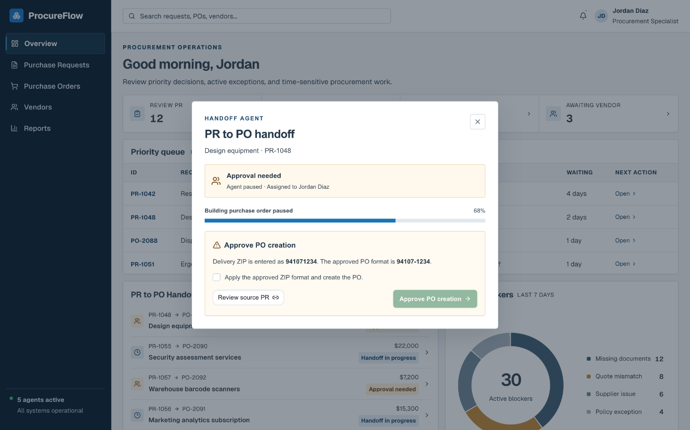

Technology Industry
ProcureFlow
ProcureFlow helps procurement teams turn approved purchase requests into accurate, traceable purchase orders.
- Role
- Sole product designer
- Timeline
- 9 months
- Industry
- Technology
- Focus
- Agentic workflows
01 · Project Overview
The Problem
Procurement specialists had to consolidate and re-enter purchasing data across disconnected systems before issuing purchase orders for company purchases. This fragmented process increased cycle time, introduced errors, and weakened traceability.
The Solution
ProcureFlow creates a controlled handoff between purchase request review and order creation. The Purchase Request Agent verifies that an approved request is ready for ordering, while the Purchase Order Agent carries the verified context into draft purchase orders and checks them against the original request.
The Impact
The key results, such as time saved, errors reduced, or adoption.
My Role
As the sole designer over nine months, I mapped the procurement workflow, defined each agent’s responsibilities and human checkpoints, and led the work from early concepts through prototype validation.
02 · Solution
Four screens carry a purchase request from review to purchase order.
Created to help procurement teams prioritize exceptions and intervene when an agent needs human judgment.
Created to demonstrate how an approved request is validated against quotes, contracts, policy, and budget before becoming a financial commitment.

Created to show how automation pauses for a specific exception that requires human accountability before PO creation.
Created to demonstrate the final control point where procurement verifies and authorizes the vendor-facing order.
03 · Explorations
Interviews
I interviewed 7 procurement specialists to understand what happens after a purchase request is approved and how it becomes one or more purchase orders.
“Approval tells me we can spend the money. It doesn’t mean the request is ready to become a purchase order.”From procurement specialist interview
Friction
The difficult work began after purchase request approval. Procurement had to turn an internal request into an external vendor commitment while preserving the approved scope, value, evidence, and decision history.
Three problems repeated:
I defined the end-to-end procurement experience, including the workflows, decision points, and controls that connect purchase request review to purchase order execution.
Current Procurement Flow
I mapped the end-to-end purchasing journey to identify critical handoffs and ownership boundaries. The core design challenge was to preserve the control between internal approval and vendor commitment while creating a continuous workflow for procurement specialists.
- 01Employee submits purchase request
- 02Manager and budget owner approve request
- 03Procurement reviews request and documents
- Friction04Context gathered across systems
- 05Procurement manually re-enters order data
- 06Purchase order created in ERP
- 07Vendor receives purchase order
04 · Platform
A walkthrough of the ProcureFlow platform.
Agent Architecture
Engineering designed and built the agent architecture; I partnered with them on where people needed to stay in the loop. Early on, the agents handed requests straight to order creation, and specialists didn’t trust purchase orders they couldn’t verify. I resolved this by adding a review step: once the agent has checked an approved purchase request, a procurement specialist confirms the request is accurate before it's sent for purchase order creation.
Data sources
ProcureFlow orchestration
- Assembles request context
- Checks quotes, contracts, vendor
- Flags gaps for review
- Drafts one or more POs
- Allocates line items
- Reconciles totals to request
Systems of record
Purchase Request Agent
Shows every approved purchase request waiting to become an order, so the specialist knows what to pick up next.
Surfaces anything the agent couldn't verify on the request, so the specialist resolves it before the order moves forward.
Checks each line item on its own, so items that pass can move ahead while flagged ones wait.
Asks the specialist to confirm the handoff before the agent creates a purchase order.
Confirms the purchase order was created and links it back to the request it came from.
Purchase Order Agent

Lists every purchase order the agent has drafted, with its status and the request it came from, so the specialist can track what's ready to issue.
Shows the purchase order the agent prepared and checks it against the approved request, so the specialist can review it. Ticking the confirmation unlocks Issue PO, so nothing goes to the vendor without a person signing off.
Confirms the purchase order has been sent to the vendor and is now waiting on their confirmation.
Human Checkpoint
The dashboard flags requests where the agent has paused and needs a person, so the specialist sees what's waiting on them.
Explains why the agent paused and holds PO creation until the specialist confirms the fix, so nothing moves forward without approval.
Dashboard
The working prototype. Start from the overview, open a request in the priority queue, or follow a PR through the handoff to its purchase orders.
05 · Validation
Testing revealed that procurement users wanted a more detailed view of the activities performed during the PR-to-PO handoff, including what data was being retrieved, which steps were completed, and why their intervention was required.

06 · Impact
I compared the average time and number of system switches required to move an approved purchase request through PO creation and submission to the vendor.
07 · Reflection
What Worked Well
I focused on defining the right boundary between automation and human judgment in the PR-to-PO handoff. I designed the system to retrieve procurement data, validate documentation, and prepare the purchase order, while keeping users in control of exceptions and final approval.
Next Steps
Next, I would expand ProcureFlow into a unified procurement experience by bringing PR creation, internal approvals, the PR-to-PO handoff, and vendor collaboration into one place. I would also explore how a vendor portal could integrate with the system to enable a seamless exchange of quotes, documents, order updates, and exceptions between internal teams and external partners.